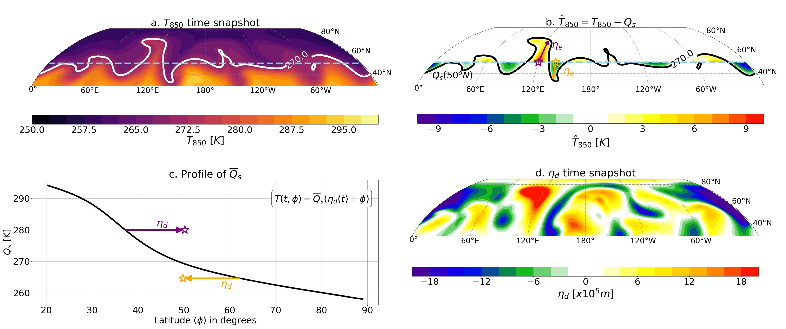
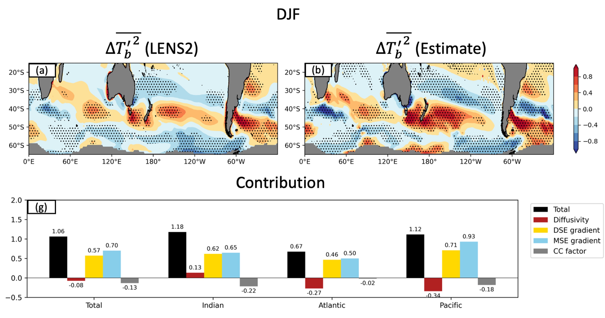

Physical Scaling of Extratropical Climate Extremes
Climate extremes, including heat waves, cold spells, and intense precipitation, can profoundly affect ecosystems, infrastructure, economies, and human well-being. These events arise from complex interactions among atmospheric circulation, land and ocean conditions, and the changing background climate, making their physical causes and future changes difficult to understand.
In this research theme, we combine simple physical theories with numerical experiments to identify the mechanisms that shape extratropical climate extremes. By isolating essential processes within complex climate systems, we seek to explain why extremes occur, how they respond to climate change, and how their future projections can be better constrained.
Thermodynamical and dynamical constraints on extratropical temperature distribution

Temperature extremes occur in the cold and warm tails of the temperature distribution and can have major societal and economic impacts. Because these distributions are often non-Gaussian, knowing only how the mean and variance change is not enough to explain how extremes will respond to climate warming. We therefore need a physical way to understand how the full temperature distribution is formed and how it may change.
In the extratropical lower troposphere, daily temperature anomalies are strongly shaped by synoptic weather systems that move air masses northward and southward across the background temperature gradient. A warm or cold anomaly depends on both how far the air is displaced and the temperature contrast between where the air comes from and where it arrives.
We develop a Lagrangian eddy-mixing framework that separates these two effects. Equivalent latitude and local finite-amplitude wave activity are used to quantify the effective meridional displacement of air masses, while the Lagrangian-mean temperature profile describes the background thermodynamic structure. Combining the displacement with this background profile allows us to reconstruct daily temperature fields and their probability distributions.
Currently ongoing
Quantifying land-atmosphere contributions to wintertime midlatitude surface air temperature variability

While large-scale atmospheric advection dominates synoptic temperature variability above the boundary layer (e.g., above 850 hPa), the physical processes become much more complex when interactions with land and ocean surfaces are involved.
From the perspective of Lagrangian advection, temperature variance increases when atmospheric circulation moves air parcels across regions with strong background temperature gradients and allows them to travel long distances before mixing. How far these parcels travel depends on how much energy they lose through interactions with the land surface. This provides an intuitive picture of why displacement, or the mixing length, can be linked to land-atmosphere interactions.
To make this idea quantitative, we use a simple one-dimensional stochastic model for near-surface temperature anomalies. In this framework, Brownian motion represents random synoptic winds, while diabatic processes are idealized as linear damping. The model links temperature variance to three basic ingredients: the background temperature gradient, the strength of stochastic advection, and the damping rate set by surface interactions.
dTs' = -αTs'dt - GσdWt
G = ∂yθs
Ts'2 = (σ2 / 2α)G2 = (D / α)G2
ℓm2 = D / α
Here, α is the damping rate, σ measures the amplitude of stochastic synoptic winds, D = σ2 / 2 is the effective diffusivity, and ℓm is the mixing length. A larger mixing length means that air parcels can travel farther across the background temperature gradient before being damped, increasing near-surface temperature variance.
We then extend this idealized picture to a more realistic atmosphere using a column-integrated moist static energy framework. By considering the covariance budget between moist static energy and near-surface temperature, the same physical balance can be written in a form that links temperature variance to energetic forcing and damping. Details are given in the related publication, but the resulting scaling has a similar structure:
ℓm2 = εCaD / α
Here, εCaD represents the effective energetic source of temperature variance, while α measures the sensitivity between near-surface temperature and energetic fluxes. In this more realistic framework, the mixing length is still controlled by a competition between processes that generate temperature variance and processes that damp it through land-atmosphere exchange.
We test this framework in climate models and find that changes in α strongly influence temperature variance. In the Community Earth System Model, different versions of the Community Land Model, CLM4 and CLM5, simulate different values of α, motivating experiments that isolate the role of land-atmosphere coupling.
We use CLM4 experiments to perturb land-surface coupling and NudUV experiments to constrain large-scale horizontal winds. The NudUV experiments show that changing large-scale synoptic circulation alone produces only modest changes in temperature variance. In contrast, the CLM4 experiments produce a smaller α, which increases the mixing length and leads to larger temperature variance.
Mechanisms of Southern Hemisphere midlatitude surface air temperature variability under climate warming

Building on the framework above, this study applies the same physical scaling idea to Southern Hemisphere midlatitude temperature variability over the ocean, where the effect of evaporation becomes especially important.
Unlike over land, where evaporation can be limited by soil moisture and vegetation, evaporation over the ocean is more directly related to surface saturation humidity, whose temperature dependence follows the Clausius-Clapeyron relation. As a result, we can explicitly quantify how latent heat flux covaries with near-surface temperature and temperature variance as follows:
L Tb' E' = -αmLγHTb'2
Here, αm represents evaporative damping, L is latent heat, γ describes the temperature sensitivity of saturation specific humidity, and H is the climatological relative humidity.
Using the Community Earth System Model version 2 Large Ensemble, we examine how subseasonal surface air temperature variance changes under climate warming. The simulations show that temperature variance intensifies and shifts poleward over the South Pacific and South Atlantic Oceans during austral summer. During austral winter, variance increases over the Indian and South Pacific Oceans but weakens in subpolar regions.
The scaling framework relates these changes to near-surface horizontal advection and the net energetic forcing of the atmospheric column. Estimated changes from this framework closely match the simulated responses, showing that stronger dry static energy and moist static energy gradients outweigh the damping effects of changes in diffusivity and evaporative cooling. These results provide a physical explanation for Southern Hemisphere midlatitude temperature-variance changes under warming and highlight the roles of energetic and moisture constraints.